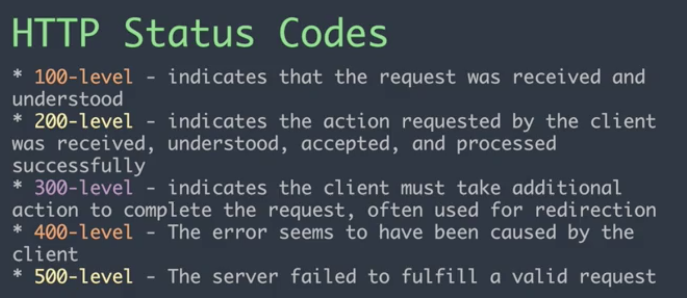

Introduction to Async and JSON
Async and JSON Review Study Guide
Click here to review.
How do JavaScript and HTML work together?
1. Static content and user interactions!
- Think of a simple website.
- Everyone accesses the basic content and functionality of a web page, using any browser or Internet connection.
- The website can respond to user driven events. This can update the UI.
How do JavaScript and HTML work together?
2. Dynamic Content and More Data
- Think of a complicated web application.
- Everyone can log in and create their own accounts. This will load specific data depending on the user interactions. The "shell" of the app is the same for all users, but the content is dynamic.
- What are some examples?
1) Static Content

A click from the user changes the UI,
but the data is the same of all users.
2) Dynamic Content
Adding Data (often user data)!

New unique data is added specifically for the user who is currently using the app.
Where is user data stored?

In databases across the Internet!
Remember!
Backend languages handle the requests for data about users. Databases hold all of the information about our users.
What happens if that language is different from JavaScript? And how do we make those requests?

Sending/Receiving Data Across the Internet
JSON = JavaScript Object Notation
- JSON is all about transmitting data objects
- This is a way to store and send data!
- JSON can be read by all sorts of backend platforms and databases.
How does JSON work?
- Using Key/Value pairs
- Keys must be stored with quotes (unlike JS Objects)
- Value can be the following data types: Number, String, Boolean, Array, Object, null
- Resembles objects in JS
Example
{
"firstName": "Jane",
"lastName": "Smith",
"address": {
"streetAddress": "425 2nd Street",
"city": "San Francisco",
"state": "CA",
"postalCode": 94107
},
"phoneNumbers": [
"212 732-1234",
"646 123-4567" ]
}
How is data sent over the internet?
GET and POST Requests

Let's make a GET request for some JSON
Add the following URL into your URL bar in your browser.
Your browser will automatically make a GET request, and this particular response will be JSON. This is very common for when you are making API calls to get data.
Click here for an example.
Let's add a JSON Formatter
The GET request on the prior slide yields JSON in raw form.
To make the JSON more readable, we will need to parse it.
Click here to add JSON Formatter,
an extension from the Chrome Web Store.
Then click between Raw and Parsed. Notice what happens!
When do we make GET and POST requests?
- When we go to a website (GET)
- When we login or sign up for a web app (POST)
- When we search for items in an online store (GET)
- When we submit a post to a social media site (POST)
- When we submit a form (POST)
Web Apps
Web apps can be set up to make many, many GET and POST requests for almost any user action.
Frontend developers send those requests and receive the responses. They also determine WHEN a request is sent and how it is handled by the UI.
What does asynchronous mean?
Asynchronous technologies enable users to access information or communicate at different points of time, usually at the time of choice of the user.
Asynchronous Analogy
A bank teller that only serves one person can only serve that one person at a time
VERSUS
Multiple tellers who can see multiple people but all access the same back room.
A traditional data-driven web application is written so that it:
- Displays a webpage
- Waits for user interaction
- Asks the server for data
- Reloads the webpage
This process has a negative effect....
Sad Users
As a result, the user has "down time" - a period of time where the users can't interact with the webpage at all.

Async in the Wild

As you load more listings on Airbnb, you are sending requests for more data.
Web 1.0 and User Interaction

Web 2.0 and User Interaction

Importance of Async for Web 2.0 Programming
- The user can still interact with other parts of the page while one part is loading.
- The user can selectively load the content they're interested in.
- This is arguably the most important part of Web 2.0 programming!
Web 1.0 vs. Web 2.0
|
|
| Technologies Used: | Technologies Used: |
|
|
Requests and Responses

Requests and Responses
- Front-End: Hey, Back-End! Here are my credentials. Can I get some data? How about books on AJAX?
- Back-End thinks about it, decides how to handle request...looks in database, searches...
- Back-End: 200 OK, here are some books on AJAX!
- Front-End: Thanks! I'm going to make an online bookshelf with the data!
How does this communicating take place?
There are different methods for making async requests, and new ones are being added all the time.
We will talk about a tool that is built into JavaScript, called Fetch.

(Previously) AJAX
AJAX = "Asynchronous JavaScript and XML."
- AJAX was a tool most commonly used with jQuery to make Asynchronous GET and POST requests.
- AJAX is not really used much anymore as a technology.
Fetch
- Fetch allows for asynchronous data transfer between a webpage and a web server/API.
- JavaScript tells the browser to retrieve or send data from a particular URL and send the response back to the webpage.
Let's talk about this diagram

Server Status Responses
Fetch
The Fetch API allows JS to access and manipulate the HTTP pipeline, such as requests and responses, using fetch().
Let's take a look at "GET" and "POST"
//GET
fetch('http://example.com/movies.json')
.then(response => response.json())
.then(data => console.log(data));
//POST
var data = { name: "lhack"}
fetch('http://example.com/movies.json', {
method: 'POST',
body: JSON.stringify(data)
})
.then(response => response.json())
.then(data => console.log(data));
Fetch for GET and POST Requests
//GET
fetch('http://example.com/movies.json')
//POST
var data = { name: "lhack"}
fetch('http://example.com/movies.json', {
method: 'POST',
body: JSON.stringify(data)
})
Notice that both requests have a url string as a parameter.
The POST request has an additional parameter: an object.
The object in the POST request has 2 properties:
method, which must have a value of 'POST'body, which must utilize the JSON.stringify() method.- The data to be posted must be passed into JSON.stringify() to become a JSON string.
Fetch first, then what?
When using fetch(), expect a response and data.
Let's look at "GET" and "POST" again.
//GET
fetch('http://example.com/movies.json')
.then(response => response.json())
.then(data => console.log(data));
//POST
var data = { name: "lhack"}
fetch('http://example.com/movies.json', {
method: 'POST',
body: JSON.stringify(data)
})
.then(response => response.json())
.then(data => console.log(data));
Notice we can use method chaining and apply .then() right after we use the fetch() method.
understanding .then()
doSomething()
.then(function(result) {
return doSomethingElse(result);
})
.then(function(newResult) {
return doThirdThing(newResult);
})
.then(function(finalResult) {
console.log('Got the final result: ' + finalResult);
})
.catch(failureCallback);
After a fetch(), an app can have as many .then() methods as applicable.
A .catch() method is used to catch errors.
understanding .then() with arrow functions
doSomething()
.then(result => {
return doSomethingElse(result);
})
.then(newResult => {
return doThirdThing(newResult);
})
.then(finalResult => {
console.log('Got the final result: ' + finalResult);
})
.catch(failureCallback);
More Fetch Examples
Let's walk through this example
Exercise using an API
We will check out this example using the Cat Facts API
Click here


Let's display the data!
$('.btn').click(function() {
$('.text').text('loading . . .');
fetch('https://cat-fact.herokuapp.com/facts')
.then(response => response.json())
.then(data => {
for (var i = 0; i < data.all.length; i++) {
$(".text").append("" + data.all[i].text + "
")
}
});
});
Another Fetch GET exercise
Fetch POST Exercise
- Make a new source folder for a website.
- Allow the user to enter a song title and artist.
- Call this API.
- Get the lyrics.
- Display to your user!
How JS Works!
Great Resources
What are other ways to be async in JS?
Async/Await
Use Async Await for Cat Facts
We have used fetch() to get data using the Cat Facts API.
Click here to refactor using async/await.
Feel free to reference the MDN documentation

Async Await using Numbers API
Ask a user for a number, then make an API call to fetch and then display a trivia fact about that number to the user.
Click here for the instructions and links to resources to help you use async/await.
Async and JSON Roundup
Click here to review.
THE END
Thank you for your attention!